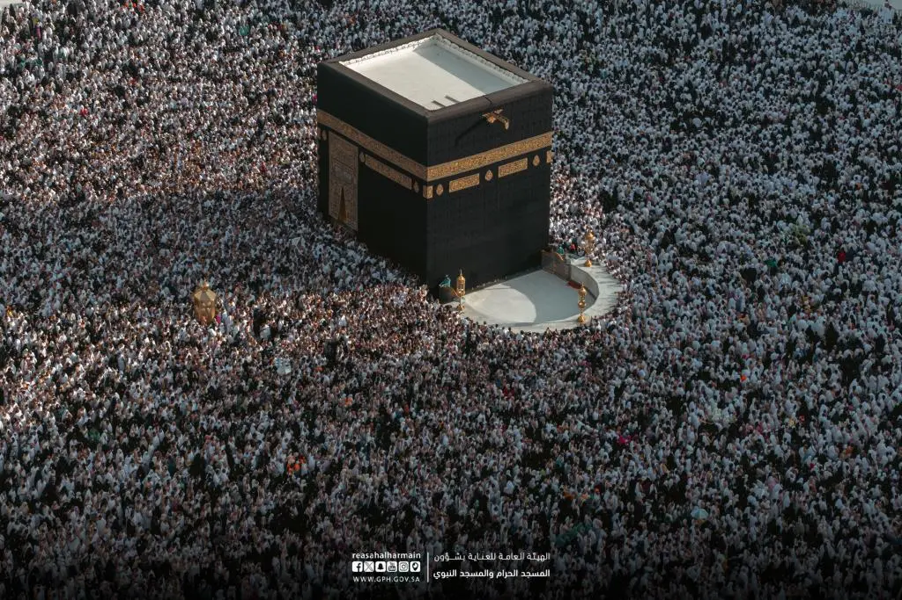
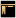

الكعبة الشريفة
في قلب مكة المكرمة، حيث يلتقي الخشوع بالجلال، تقف الكعبة المشرفة شامخة، شاهدة على تاريخ الإيمان ومهوى أفئدة المؤمنين. هي أول بيت وضع للناس لعبادة الله الواحد الأحد.
اقرأ المزيدفي قلب مكة المكرمة، يتجلى المسجد الحرام بالكعبة المشرفة، قبلة المسلمين وأول بيت وضع للناس. هنا، تتضاعف الصلاة بمئة ألف صلاة، وتبدأ مناسك الحج والعمرة، حيث يجتمع المسلمون من كل فج عميق، متساوين أمام عظمة الخالق، قاصدين طاعته وابتغاء مرضاته.


مكتبة المسجد الحرام، معلم بارز في قلب مكة المكرمة، يضم بين جدرانه إرثًا ثقافيًا عظيمًا ويسعى لتقديمه بأحدث الوسائل لإثراء تجربة زائري أطهر بقاع الأرض.



وليطوفوا
طلب الالتحاق بكلية المسجد الحرام
طلب الالتحاق بمعهد المسجد الحرام
دافعي العربات
المطوف الرقمي